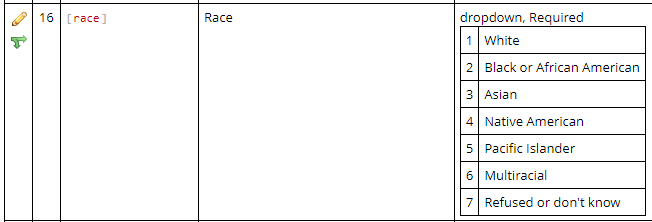
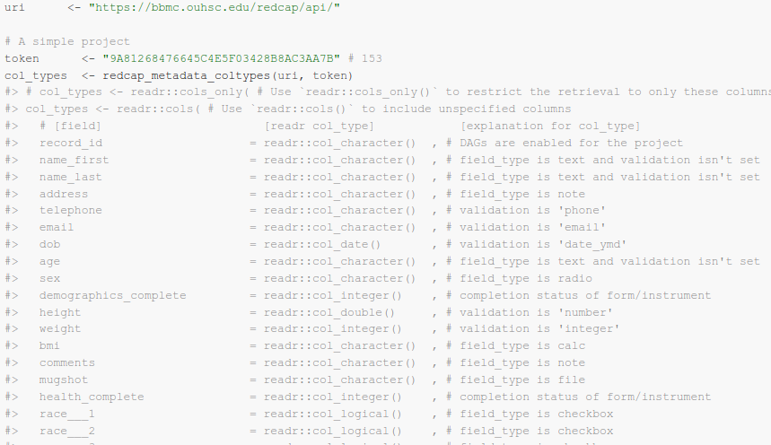
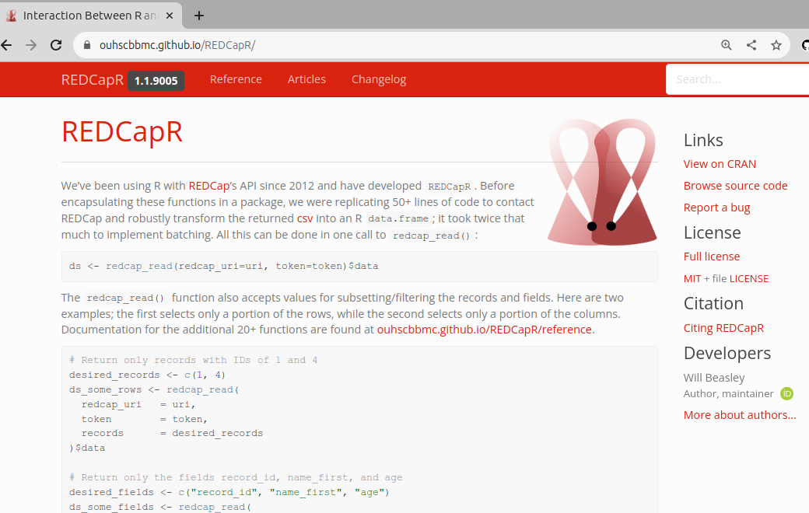

if (packageVersion("REDCapR") < "1.1.9005") {
install.packages("remotes")
remotes::install_github("OuhscBbmc/REDCapR")
}Advanced API Tasks REDCap using REDCapR
To start this final section, we will upload data using REDCapR. Let’s install with the newest version of REDCapR from GitHub.
Write Data Part 1: Intro
Writing data to REDCap is more difficult than reading data from REDCap. When you read, you receive data in the structure that the REDCap provides you. You have some control about the columns, rows, and data types, but there is not a lot you have to be concerned.
In contrast, the structure of the dataset you send to the REDCap server must be precise. You need to pass special variables so that the REDCap server understands the hierarchical structure of the data points.
We’ll talk through that process, but not actually write/upload. Because we’d step on each other’s toes using the same REDCap server.
We’ll use a different dataset that’s simpler, so the uploading concepts will be quicker to cover.
Strategy
REDCapTidieR makes your life easier when you read from a project with longitudinal or repeating structures. It breaks down the calls for each part and hands you tidy rectangles with clean grains.
But no package holds your hand for writing to REDCap. Instead you’ll need to create a tidy grain for each rectangle/data.frame, and upload each in a separate call.
As described in REDCapR’s Retrieving Longitudinal and Repeating Structures vignette, the best way to read and write data from projects with longitudinal/repeating elements is to break up the “block matrix” dataset into individual datasets. Each rectangle should have a coherent grain.
Steps
Following this strategy, we’ll write to the REDCap server in two distinct steps:
- Upload the patient-level instrument(s)
- Upload the each repeating instrument separately.
The actual upload phase is pretty straight-forward –it’s just a call to REDCapR::redcap_write(). Most of the code prepares the dataset so that the upload will run smoothly.
Retrieve Token
Please closely read the Retrieve Protected Token section, which has important security implications. The current vignette imports a fake dataset into REDCap, and we’ll use a token stored in a local file.
# retrieve-credential
path_credential <- system.file("misc/example.credentials", package = "REDCapR")
credential <- REDCapR::retrieve_credential_local(
path_credential = path_credential,
project_id = 3748
)
c(credential$redcap_uri, credential$token)Datasets to Write to Server
To keep this vignette focused on writing/importing/uploading to the server, we’ll start with the data that needs to be written. These example tables were prepared by Raymond Balise for our 2023 R/Medicine workshop, “Using REDCap and R to Rapidly Produce Biomedical Publications”.
There are two tables, each with a different granularity:
ds_patient: each row represents one patient,ds_daily: each row represents one daily measurement per patient.
# load-patient
ds_patient <-
"test-data/vignette-repeating-write/data-patient.rds" |>
system.file(package = "REDCapR") |>
readr::read_rds()
ds_patient# load-repeating
ds_daily <-
"test-data/vignette-repeating-write/data-daily.rds" |>
system.file(package = "REDCapR") |>
readr::read_rds()
ds_dailyWrite Data Part 2: One row per patient
Besides the data.frame to write to REDCap, the only required arguments of the REDCapR::redcap_write() function are redcap_uri and token; both are contained in the credential object created in the previous section.
As discussed in the Troubleshooting vignette, we recommend running these two preliminary checks before trying to write the dataset to the server for the very first time.
Prep: Stoplight Fields
If the REDCap project isn’t longitudinal and doesn’t have arms, uploading a patient-level data.frame to REDCap doesn’t require adding variables. However we typically populate the *_complete variables to communicate the record’s status.
If the row is needs a human to add more values or inspect the existing values consider marking the instrument “incomplete” or “unverified”; the patient’s instrument record will appear red or yellow in REDCap’s Record Dashboard. Otherwise consider marking the instrument “complete” so it will appear green.
With this example project, the only patient-level instrument is “enrollment”, so the corresponding variable is enrollment_complete.
# patient-complete
ds_patient <-
ds_patient |>
dplyr::mutate(
enrollment_complete = REDCapR::constant("form_complete"),
)Prep: REDCapR::validate_for_write()
REDCapR::validate_for_write() inspects a data frame to anticipate potential problems before writing with REDCap’s API. A tibble is returned, with one row per potential problem (and a suggestion how to avoid it). Ideally an 0-row tibble is returned.
REDCapR::validate_for_write(ds_patient, convert_logical_to_integer = TRUE)If you encounter problems that can be checked with automation, please tell us in an issue. We’ll work with you to incorporate the new check into REDCapR::validate_for_write().
When a dataset’s problems are caught before reaching the server, the solutions are easier to identify and implement.
Prep: Write Small Subset First
If this is your first time with a complicated project, consider loading a small subset of rows and columns. In this case, we start with only three columns and two rows.
# patient-subset
ds_patient |>
dplyr::select( # First three columns
id_code,
date,
is_mobile,
) |>
dplyr::slice(1:2) |> # First two rows
REDCapR::redcap_write(
ds_to_write = _,
redcap_uri = credential$redcap_uri,
token = credential$token,
convert_logical_to_integer = TRUE
)Prep: Recode Variables where Necessary
Some variables in the data.frame might be represented differently than in REDCap.
A common transformation is changing strings into the integers that underlie radio buttons. Common approaches are dplyr::case_match() and using joining to lookup tables (if the mappings are expressed in a csv). Here’s an in-line example of dplyr::case_match().
ds_patient <-
ds_patient |>
dplyr::mutate(
race =
dplyr::case_match(
race,
"White" ~ 1L,
"Black or African American" ~ 2L,
"Asian" ~ 3L,
"Native American" ~ 4L,
"Pacific Islander" ~ 5L,
"Multiracial" ~ 6L,
"Refused or don't know" ~ 7L
)
)
Write Entire Patient-level Table
If the small subset works, we usually jump ahead and try all columns and rows.
If this larger table fails, split the difference between (a) the smaller working example and (b) the larger failing example. See if this middle point (that has fewer rows and/or columns than the failing point) succeeds or fails. Then repeat. This “bisection” or “binary search” debugging technique is helpful in many areas of programming and statistical modeling.
# patient-entire
ds_patient |>
REDCapR::redcap_write(
ds_to_write = _,
redcap_uri = credential$redcap_uri,
token = credential$token,
convert_logical_to_integer = TRUE
)Write Data Part 3: Repeating Instrument
Add Plumbing Variables
As stated in the vignette’s intro, the structure of the dataset uploaded to the server must be precise. When uploading repeating instruments, there are several important columns:
record_id: typically indicates the patient’s id. (This field can be renamed for the project.)redcap_event_name: If the project is longitudinal or has arms, this indicates the event. Otherwise, you don’t need to add this variable.redcap_repeat_instrument: Indicates the instrument/form that is repeating for these columns.redcap_repeat_instance: Typically a sequential positive integer (e.g., 1, 2, 3, …) indicating the order.
The combination of these variables needs to be unique. Please read the Retrieving Longitudinal and Repeating Structures vignette for details of these variables and their meanings.
You need to pass specific variables so that the REDCap server understands the hierarchical structure of the data points.
# repeat-plumbing
ds_daily <-
ds_daily |>
dplyr::group_by(id_code) |>
dplyr::mutate(
redcap_repeat_instrument = "daily",
redcap_repeat_instance = dplyr::row_number(da_date),
daily_complete = REDCapR::constant("form_complete"),
) |>
dplyr::ungroup() |>
dplyr::select(
id_code, # Or `record_id`, if you didn't rename it
# redcap_event_name, # If the project is longitudinal or has arms
redcap_repeat_instrument, # The name of the repeating instrument/form
redcap_repeat_instance, # The sequence of the repeating instrument
tidyselect::everything(), # All columns not explicitly passed to `dplyr::select()`
daily_complete, # Indicates incomplete, unverified, or complete
)
# Check for potential problems. (Remember zero rows are good.)
REDCapR::validate_for_write(ds_daily, convert_logical_to_integer = TRUE)
ds_dailyWriting Repeating Instrument Variables
# daily-entire
ds_daily |>
REDCapR::redcap_write(
ds_to_write = _,
redcap_uri = credential$redcap_uri,
token = credential$token,
convert_logical_to_integer = TRUE
)Write Data Part 4 - Next Steps
More Complexity
This vignette required only two data.frames, but more complex projects sometimes need more. For example, each repeating instrument should be its own data.frame and writing step. Arms and longitudinal events need to be considered too.
Batching
By default, REDCapR::redcap_write() requests datasets of 100 patients as a time, and stacks the resulting subsets together before returning a data.frame. This can be adjusted to improve performance; the ‘Details’ section of REDCapR::redcap_write() discusses the trade offs.
I usually shoot for ~10 seconds per batch.
Manual vs API
Manual downloading/uploading might make sense if you’re do the operation only once. But when does it ever stop after the first time?
If you have trouble uploading, consider adding a few fake patients & measurements and then download the csv. It might reveal something you didn’t anticipate. But be aware that it will be in the block matrix format (i.e., everything jammed into one rectangle.)
Column Types
The data type of each variable can make a big difference to the reliability of a script. REDCap’s underlying redcap_data table in MySQL/MariaDB is text. But analyses in R do better when they’re cast appropriately to numbers & dates.
If you’re doing basic analyses in R, you’ve probably used the readr package to convert the text of a CSV to an R data frame. Under the hood, packages like REDCapR use readr to convert the text from REDCap to produce a data frame.
Three reasonable options when reading from REDCap are:
Let
readr::read_csv()make it’s best guess.Keep everything as a string/character, as it lives in
redcap_data.Ask
REDCapR::redcap_metadata_coltypes()to inspect project & variable settings to infer the likely type. Then pass this specification toREDCapR::redcap_read()’scol_typesparameter, which is ultimately used byreadr::read_csv().
Token Security
Several good approaches exist for securely handling passwords. (Two years ago I started a group to catalog them, but then I dropped the ball.)
Talk with your institution’s IT Security team about options for your campus.
Three goals, in descending priority:
- Don’t let the token/password fall into the wrong hands.
- Use personal tokens so the audit trail is meaningful.
- Adding tokens shouldn’t be a hassle. Ideally it’s automatic.
Bad Options
Harded-coded. Fails all three goals. It’s appropriate for only demo projects without PHI.
uri <- "https://bbmc.ouhsc.edu/redcap/api/" token <- "9A81268476645C4E5F03428B8AC3AA7B" REDCapR::redcap_dag_read(redcap_uri=uri, token=token)$dataSave credentials in an unsecured file
Good Options
Save credentials in an unsecured file. Then use something like
credential <- REDCapR::retrieve_credential_local(path_credential, 18L)Environmental variables. But they’re more difficult for portability & reproducibilty.
Keyring package solutions. Good for security & audits, but doesn’t scale well across lots of projects & users.
Token Server. Is my preference, but it takes a few hours to establish. It leverages a separate database’s connection with Active Directory (ie, “integrated security”). Users never have to manually save or retrieve tokens as long as they’re on the same network as the “token server” database.
More REDCapR Documentation
For a more thorough explanation of analytical approaches, go to REDCapR’s website. Including the 7 vignettes like
- Typical REDCap Workflow for a Data Analyst,
- Retrieving Longitudinal and Repeating Structures, and especially
- Troubleshooting REDCap API Calls.

Other Packages in the REDCap Ecosystem
REDCapR & REDCapTidier are just of of 10+ actively-developed packages.
REDCap Tools (redcap-tools.github.io/) was created by a people to help inventory the evolving list of packages. Most people using the REDCap API are not REDCap admins, so they don’t have access to the Community forums.
The most relevant packages to this audience include:
- redcapAPI for R: recently handed from Ben Nutter to Vandy developers
- tidyREDCap for R: Raymond Balise of U Miami has fxs for scenarios we haven’t discussed today)
- REDCapDM for R: –João Carmezim
- REDCap Custodian for R: Philip Chase & Kyle Chesney of U Florida
- PyCap: similar goals as REDCapR –maintained by Paul Wildenhain of CHOP
- redcap-api for C#: Michael Tran of VCU (inspired by Chris Nefcy)
- phpcap: more focused on server tasks –maintained by Jim Mullen & Andy Arenson of U Indiana